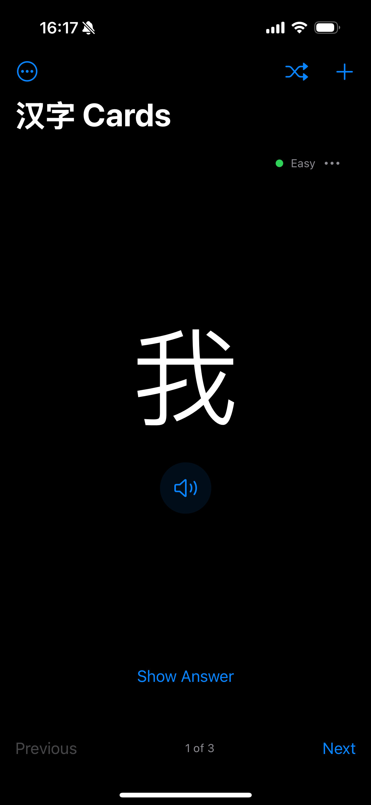

I started learning Mandarin on 03K08. For the time being, this page will serve as a dumping ground for learning resources as well as notes on my experience. In the past, I have found that I become very eager to find as many resources as possible, become overwhelmed, forget to keep track of the resources, and eventually get bored and quit. I want to prevent that from happening by currating a space where I may always return to and grab something new and interesting for myself of to point other learners to.
Language Apps
Duolingo - a classic
HelloChinese - comprehensive and actually worth the Premium
Pleco - dictionary/stoke guide/flashcards; API is used across most other apps
Mango - free Premium with Philadelphia Free Library card
Du Chinese - stories and flashcards
Immersi - currated Youtube clips with vocab tracking
Pleco has a wealth of features that make learning Mandarin much more manageable. One feature is the flashcard system. The system is highly customizable in how the flashcards are organized and presented depending on your study preferences. Most importantly, though, Pleco offers a simple import/export feature which allows me to construct custom flashcard sets in .txt files and/or use community-created flashcard sets.
Two such community sets are listed below, the HSK 3.0 characters and words.
Below is also my ever-updating personal study card deck where I am implementing my weekly topic-of-study exercise. The idea is I have 1 week to learn a set of new words to then have a conversation about with my speaking partner.
The beauty of Pleco is you, reader, can use these flashcards too!
I decided to establish a proper study system for this endeavor. For much of my academic life, I have not had to learn anything truly new. Every new course was generally built upon previous courses and my pre-existing knowledge base. So, my method of learning was mostly just osmosis and "being present" with the material through my compulsion to always go to class and do my assignments. Learning mandarin is different. There is no academic knowledge base from which I am building from. Of course I have my innate understanding of the english language, I cannot tap into any experience of formally learning the language, I simply don't remember it. Therefore, I need to formalize my process of learning mandarin, it cannot be me lazily looking at an app once or twice a day. My process must be deliberate, consistent, and in high volume.
One of the most basic ways to encourage one's self to continue towards a goal is to write down their purpose. Why are you doing this thing? What will you gain from it? Here's why I am learning mandarin:
I will be fluent in Chinese in 7 years, by 2032.
Why the hell are you doing this?
I traveled to Taiwan and China in May 2025 to meet Ashley’s extended family. It was an incredible experience to be in such a new place and to meet so many amazing people that took care of us without question or expectation of anything in return.
I wanted so badly to be able to talk to them. Instead I could do nothing but stare and smile and look to Ashley for help. Which was fine. But I want to do more. I want them to know what kind of person I am, straight from me. I want them to know I care.
They are my family now. I want to be able to speak with my family.
Otherwise, I've also constructed a progress tracker. It's nothing more than a .ods document that tracks the current day, notes how far along I am towards my goal, and summarizes my points of progress. I don't exactly know how this will help me yet, but I'm allowing it to be a living document which may shift over time as my needs change. As of 03Q00 I've given myself the task to complete my Duolingo and HelloChinese allotments every day, study at least 30 Pleco cards every day, and complete 4 chapters of the standardized HSK textbook and corresponding workbook per week. I'd like to reach HSK level 2 by 04K.
Personal Milestones
03K07 - began learning Mandarin
03W04 - first dream in which I speak Mandarin
汉子 Cards
I immediately recognized a shortcoming in publically available mandarin practice resources, specifically their functionality on and compatability with the iPhone. Duolingo is notorious for its heavy handed ads, a free user must sit through 1 minute of ads for every 2 or three minutes of studying. Most of the adspace on Duolingo is reserved for their own internal SUPER plan ($12 per month) which gets rid of ads. This is, at worst, a bit annoying to deal with. However, Duolingo mandarin is still lacking to a significant degree compared to the Latin-based languages available and I cannot imagine that Duo alone will suffice as a way to become proficient in mandarin. HelloChinese is much more robust but locks a significant portion of its study materials like recorded conversations, written stories, etc. behind their own paywall (also around $12 per month). Less game-ified apps like Pleco are very useful in their own right, with some advanced features paywalled, but I don't believe such apps were meant to be true study buddies -- more like supplementary support. Podcasts are great for active listening, but lack any accompanying written material. Open source written materials like the PeaceCorps docs are great for quick study sprints but again are lacking in any sort of supporting data that is easily transcribed to study apps.
But, so what? So there isn't one single app that does literally everything needed to learn a language AND is free? Ok you got me there. But thinking about these shortcomings got me thinking: "what service would truly help me learn mandarin faster?" One thing that has bothered me is how difficult it is to continuously be introduced to mandarin characters/words throught the written language (hanzi) and have no place to record this new addition to my knowledge. Sure, Duolingo and HelloChinese have "Review" games, but they don't give any control over which hanzi characters are presented. Indeed, all of these resources commonly lack any true flashcard-like study service. A hanzi flashcard app where I have direct control over the database of hanzi I want to study would be incredibly useful. Of course there are other apps which are meant exactly this, but they too have in-app purchases to get rid of ads, increase your flashcard deck size, etc. and often revolve around preset collections rather than fully customizable flashcard decs.
All this to say, I built my own hanzi flashcard applet: 汉子 Cards

My app can import CSV formatted data representing any number of flashcards which display the hanzi character or word with the pronounciation and definition on the reverse side. I've also included a text-to-speech module which reads the hanzi aloud. I also added a customizable difficulty settng for each card as well as a simple preferential weighting system which prefers to place harder cards at the top of the deck so the user is more likely to encounter them when the deck is shuffled.
汉子 Cards is meant to be simple to use and highly modular. It comes with the quirks of being a hand-made piece of software in that its modularity is entirely dependent on my own efforts of creating and currating CSV collections of hanzi characters and definitions. I've made a challenge for myself to actively use the app for 1 week straight and see if I feel any improvements and if I enjoy adding it to my study routine. I ultimately intend to make the app publically available, I think it would be really fun to share with other Mandarin learners. The modular CSV-based datasets mean that people can easily create custom card decks and immediately share them with others, no overhead or data processing needed! Or perhaps a professor provides a CSV of all the new characters and words for each unit, providing the students with a zero-cost method of continous study beamed directly into their pockets.
Funnily enough, I've later realized that the Pleco app has a flashcard module that is almost exactly what I've designed here (though with considerably more features). I love the Pleco app, and I respect their business model of charging once for single features rather than giving in to the subscription-based model that we are so plagued by these days.